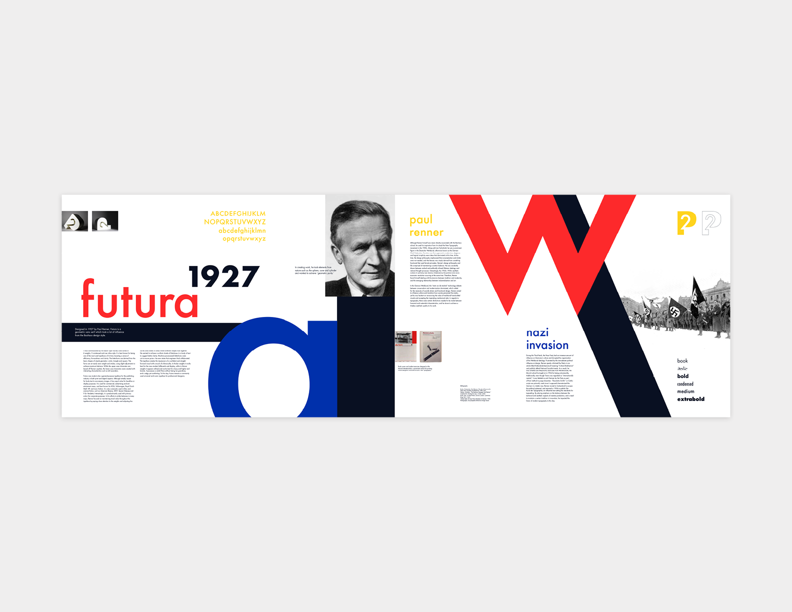

This poster series is the culmination of a month long assignment researching a given typeface, type designer, designing a 2D letterform combination, and building a 3D version of the typemark. Three posters were designed which presented the research and images of typeface. They are meant to work together as a series and individually.
Individual Posters


Poster Spread
